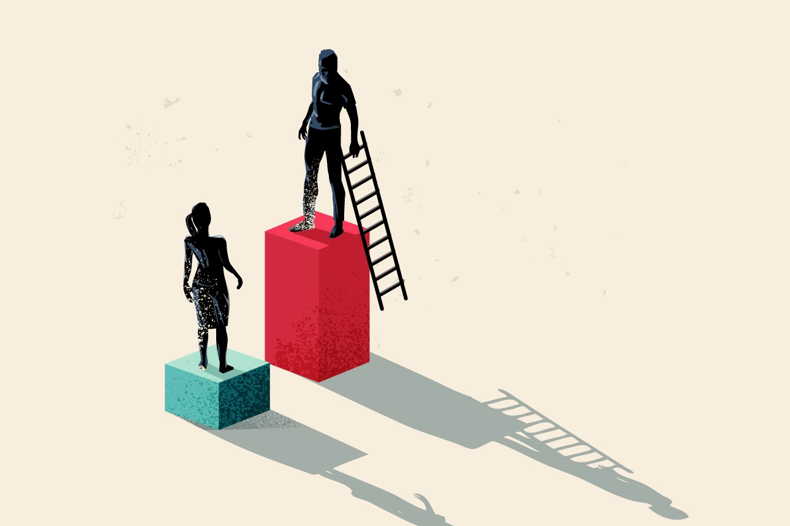
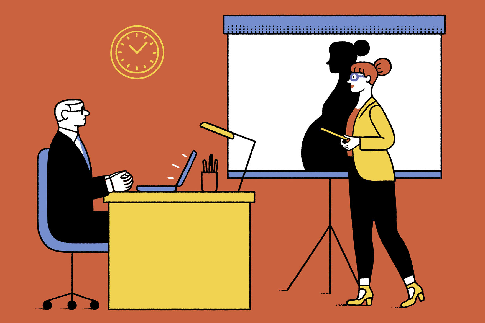

الأسباب
بشكل عام ، تختلف أسباب عدم المساواة بين الجنسين بين البلدان وتتشكل من خلال عوامل تاريخية وثقافية وسياسية تحد من فرص عمل المرأة.
الصورة النمطية

في سياق فرص العمل ، يمكن للقوالب النمطية الجنسانية أن تؤثر على عملية التوظيف وقرارات الترقية وفرص التقدم الوظيفي. على سبيل المثال ، قد يُنظر إلى النساء على أنهن أقل كفاءة ، أو أقل طموحًا ، أو أقل التزامًا بمهنهن من الرجال ، بناءً على القوالب النمطية الجنسانية. يمكن أن يؤدي ذلك إلى إغفال النساء للحصول على فرص عمل ، والحصول على رواتب أقل ومزايا أقل ، ووجود فرص أقل للتقدم الوظيفي.
الظلم

تواجه النساء الظلم في فرص العمل ، بما في ذلك الوصول المحدود إلى صناعات معينة ، وتفاوتات في الأجور مقارنة بنظرائهن من الرجال. على الرغم من أن المرأة الفلسطينية غالبًا ما تحصل على تعليم أفضل من الرجل ، إلا أن آفاق حياتها المهنية أسوأ من فرص الرجل. ونتيجة لذلك ، تُجبر الخريجات الشابات بشكل خاص على قبول وظائف لا تتناسب مع مؤهلاتهن.
تحيز
غالبًا ما تؤدي التوقعات المجتمعية والصور النمطية إلى تحيز ضد المرأة في بعض المهن. وهذا يمكن أن يؤدي إلى فرص عمل محدودة ويثني النساء عن متابعة الوظائف في المجالات التي يهيمن عليها الرجال تقليديا. وفقًا لتقرير الأمم المتحدة الذي جمع بيانات من 75 دولة ، فإن 90٪ من الرجال والنساء لديهم بعض التحيز ضد المرأة - ويعتقد نصف المستطلعين تقريبًا أن الرجال هم قادة سياسيون ورجال أعمال أقوى.
تمييز
تعاني الكثير من النساء في فلسطين من التمييز في مكان العمل ، يتمثل في الفرص التي يحصلن عليها ، والأجور التي يحصلن عليها ، والترقيات المتاحة لهن. كما تواجه المرأة تحديات أخرى مثل الاعتداء الجنسي والتحرش في مكان العمل ، مما يؤثر سلباً على مستوى المساواة في العمل.